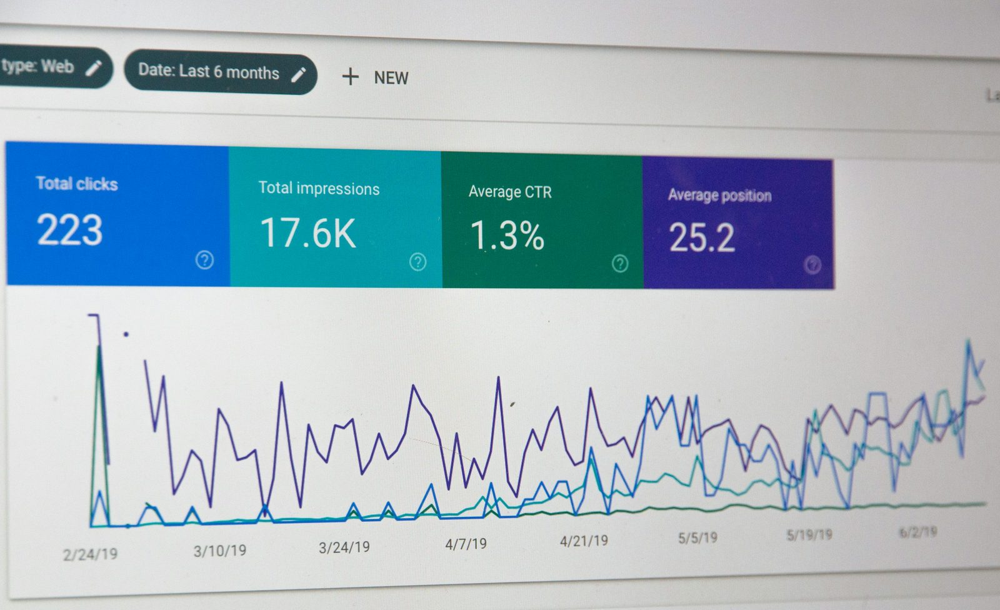

Paid ads built for profit, not just clicks.
Digital Movement UK runs Google Ads, Microsoft Ads and Meta for UK businesses that want qualified enquiries this week — managed to a profit target, tracked to the enquiry, and reported in plain English. The fast lane while your SEO compounds.

Paid ads are judged by one number: the cost of a qualified enquiry, set against what a customer is worth to you.
Paid ads should buy customers, not just traffic
Paid advertising is the fastest way to put your business in front of buyers who are searching right now. Done well, it pays for itself: every pound spent returns more than a pound in profit, and you can turn the volume up the moment you want more enquiries. Done loosely, it quietly drains budget into clicks that look busy and convert no one. The difference is not the platform; it is whether the account is run to a profit target with the tracking to prove it.
Most underperforming accounts share the same handful of leaks: budget spread across keywords with weak intent, ads that promise one thing and pages that deliver another, conversion tracking that counts clicks instead of enquiries, and bidding left on autopilot toward cheap traffic. Each leak is fixable. Once an account knows what a qualified enquiry is worth, it can spend confidently toward that number and stop everything that does not move it.
Digital Movement UK runs paid ads as a profit channel for UK small and growing businesses. We start from the value of a customer, work back to the cost per qualified enquiry the maths allows, and build the campaigns, tracking and landing pages that hit it. That keeps the conversation about booked customers and return on spend, which is the only scoreboard that matters.
Speed
Qualified enquiries can arrive within days of launch, while SEO builds the cheaper long-term channel.
Control
Turn volume up when you want growth and steady it when you are busy — the tap is yours.
Proof
Every enquiry ties back to its campaign, so you spend where customers actually come from.
Run to a profit target, proven by tracking
We begin with the economics. What is a customer worth, how many do you want, and what can you afford to pay for a qualified enquiry while staying profitable? That single number becomes the target every campaign is built around, so spending decisions are simple: scale what beats it, fix or cut what misses it.
From there we build for buyer intent. We structure campaigns and keywords around how your customers search, write ads that match the promise of the click, and send that click to a page that answers it and makes the next step obvious. We set up clean conversion tracking so the account counts enquiries and calls, then let the data, rather than guesswork, guide the bidding.
Once live, the work is relentless improvement. We cut wasted spend, scale the keywords and audiences that produce qualified enquiries, test ads and landing pages, and tighten targeting week by week. The monthly report stays in plain English: cost per qualified enquiry, return on ad spend, and the next move. As your SEO grows, we shift budget toward the cheapest source of customers, so the whole engine gets more efficient over time.
What paid ads management with us covers
Each account is scoped to the work most likely to create profitable enquiries first. The first phase usually fixes tracking and targeting, because accurate data is what every later decision depends on.
| Workstream | What it does | Why it matters |
|---|---|---|
| Account & strategy | Sets the profit target, the qualified-lead definition and the platform mix. | Every spending decision becomes simple once the target number is clear. |
| Conversion tracking | Configures accurate tracking for enquiries, calls and sales across platforms. | An account that counts enquiries can be optimised; one that counts clicks cannot. |
| Campaign build | Structures campaigns, keywords, audiences and ad copy around buyer intent. | Intent-matched spend reaches people ready to act, so budget works harder. |
| Landing pages | Reviews, builds or improves the pages that turn paid clicks into enquiries. | The best campaign still needs a page that delivers on the ad's promise. |
| Optimisation | Cuts waste, scales winners, tests ads and refines bidding every week. | Steady improvement lowers the cost of each qualified enquiry over time. |
| Reporting | Reports cost per qualified enquiry, return on ad spend and the next move. | Plain-English numbers keep the spend accountable to revenue, not vanity metrics. |
The right platform is where your customers come cheapest
We run the major ad platforms and choose by where qualified enquiries arrive at the lowest cost, then expand from there. Here is the honest shortlist for UK businesses.
Capture active demand
Search ads reach people typing exactly what you sell. The default first move for most UK businesses, because the intent is already there.
Lower-cost intent, strong in B2B
Similar searcher intent to Google, often at a lower cost per click, with reach into professional and older audiences. A smart way to extend a winning search strategy.
Create demand and retarget
Strong for visual products, local awareness and bringing back people who already visited. Best once tracking and a clear offer are in place.
Sell products at scale
Google Shopping and feed-driven campaigns put your products in front of ready buyers, managed to return on ad spend.
Built for businesses that want enquiries now
This work suits owner-led companies, clinics, trades, consultancies, ecommerce brands and B2B teams that want a reliable flow of qualified enquiries and the speed to scale when an offer is working. It fits businesses launching something new, entering a fresh location, or wanting results while their SEO matures over the coming months.
Paid ads pair naturally with the rest of the engine. They bring enquiries quickly, SEO lowers the long-term cost of those enquiries, and the CRM converts and tracks them. Run together, you finally see the full picture — cost in, revenue out, by channel — and you can move budget to wherever it produces the most customers.
The strongest fits know what a customer is worth and can handle more enquiries when they arrive. Paid ads reward that clarity: when the economics are understood and the follow-up is ready, every extra pound of profitable spend becomes a decision you can make with confidence.
Free ads review
We check your current account or market and show where profit is being left on the table.
First 30 days
We fix tracking, rebuild around intent, and launch the campaigns most likely to pay back.
Ongoing growth
We cut waste, scale winners and lower the cost of each enquiry, with no lock-in.
Common questions about paid ads
Straight answers for owners and teams weighing up budget, platforms, timing and how paid ads fit with SEO and CRM.
How much should a small business spend on Google Ads?
Start with a budget that can buy enough clicks to learn quickly in your market, usually a few hundred to a few thousand pounds a month depending on competition and the value of a customer. We size the first budget around the cost per qualified enquiry your market shows, then scale spend only as the numbers prove it pays back.
What is the difference between PPC and SEO?
Paid ads buy visibility now and stop when the budget stops. SEO earns visibility that compounds and keeps working after the spend. The strongest plan usually runs both: paid ads create qualified enquiries this week while SEO builds the cheaper, lasting channel. We help you balance the two by cost per qualified enquiry.
Which platform is best: Google Ads, Microsoft Ads or Meta?
It depends on how your buyers search and decide. Google Ads captures people actively searching for what you sell. Microsoft Ads reaches a similar intent at often lower cost in B2B and older audiences. Meta and Instagram create demand and retarget. We choose by where your qualified enquiries come cheapest, then expand.
How do you measure success in paid ads?
By profit, not clicks. We track conversions, cost per qualified enquiry and return on ad spend, tie each enquiry to its campaign, and report in plain language. Vanity metrics like impressions and clicks only matter when they lead to booked customers.
Can paid ads work with our SEO and CRM?
Yes, and they should. Paid ads bring qualified enquiries quickly, SEO lowers the long-term cost of those enquiries, and the CRM converts and tracks them. Run together, you see cost in and revenue out by channel, so every pound goes where it produces the most customers.
Do I need a new landing page for paid ads?
Often a focused landing page lifts results sharply, because the page can answer the exact promise of the ad and make the next step obvious. We review whether your current pages convert, and build or improve the ones that turn paid clicks into enquiries.
See where your ad budget is leaking — and what to fix first
Send your website and what a new customer is worth to you. We will reply with where profit is being lost today and the fastest way to turn ad spend into qualified enquiries.
Raoul (Alex) Müller
Founder, Digital Movement UK
Email: alex@digitalmovement.uk
Phone: +49 176 82360647
WhatsApp: +49 176 23296439